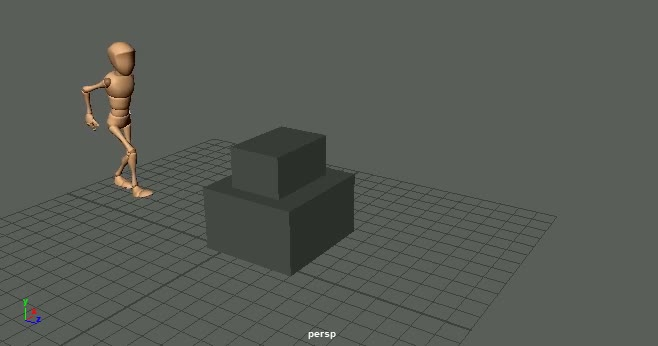
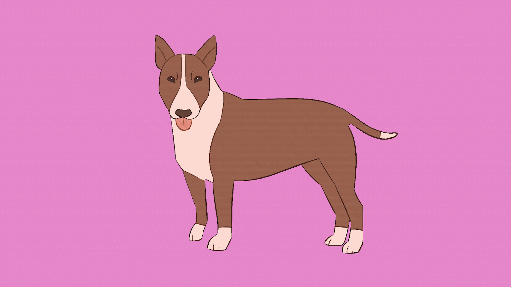
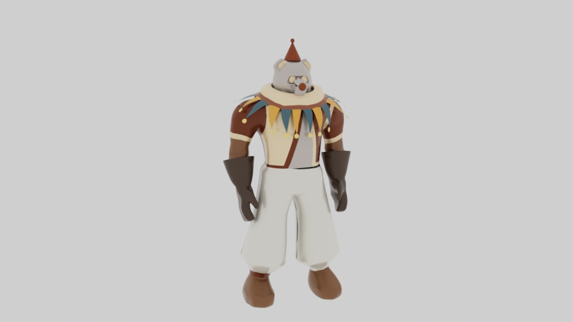
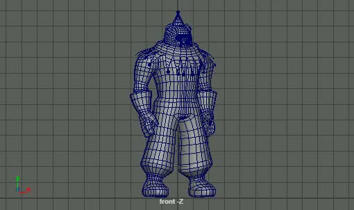
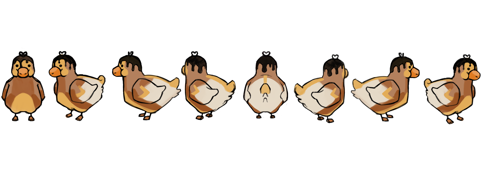
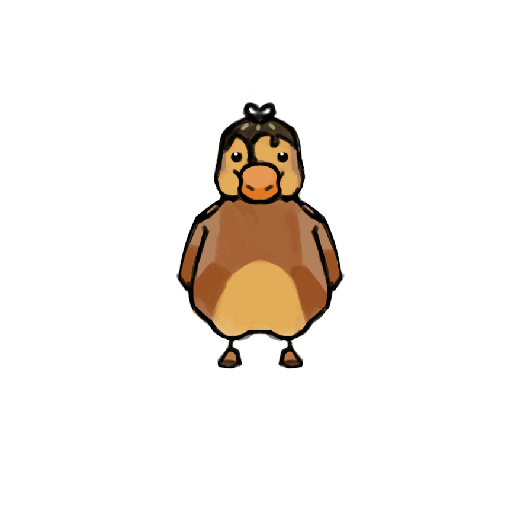
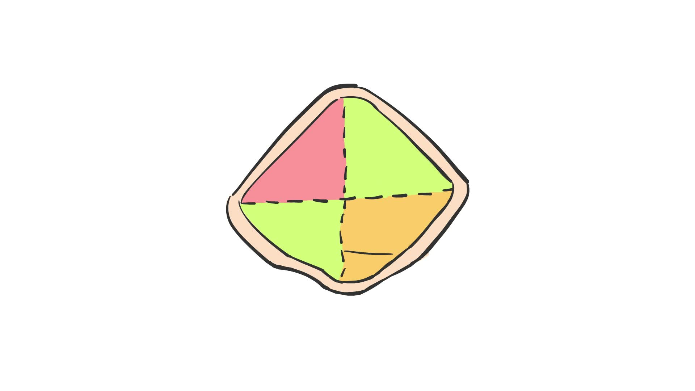

Cheryl Wang
Digital Arts
Traditional Arts
Digital Arts
Contact

Character Jump Animation

Terrier Transformation

Cyborg Render

Cyborg Turnaround

Noodle Duck Character Sheet

NoodleDuck Turnaround

Craft Shop Logo Animation
Cookies Render
‹
►
›
← Back to gallery
© Cheryl Wang